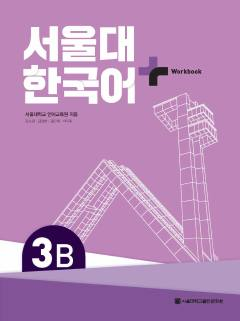

SKSeul Milliy Universitetining koreys tili 3B darajasi uchun mo'ljallangan amaliy mashqlar to'plami.
Ushbu ishchi daftar Seul Milliy Universitetining koreys tili dasturi doirasida 3B darajasi uchun mo'ljallangan qo'shimcha o'quv qo'llanmasidir. Unda o'quvchilarning lug'at boyligi, grammatika va nutq ko'nikmalarini mustahkamlash uchun turli mashqlar, shuningdek, tinglash, o'qish va yozish bo'yicha takrorlash birliklari mavjud.